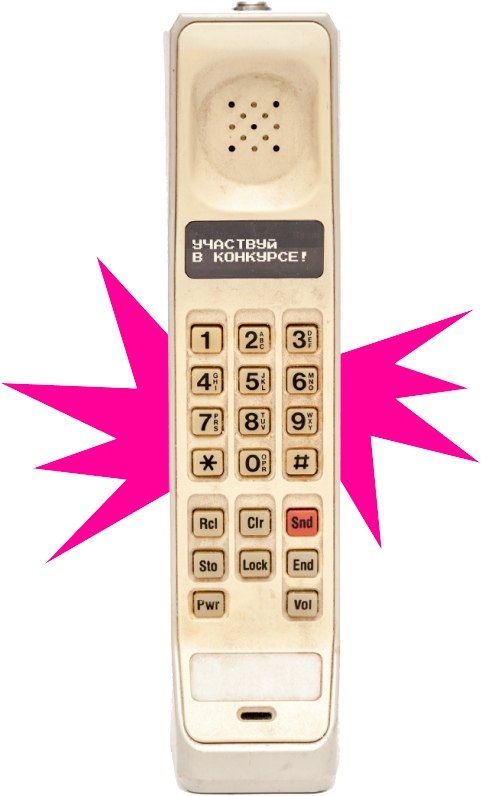
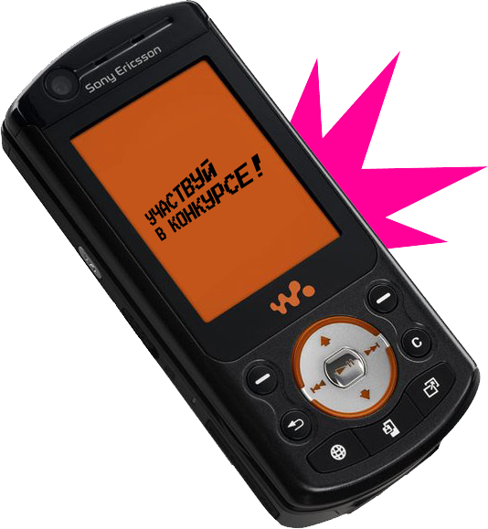
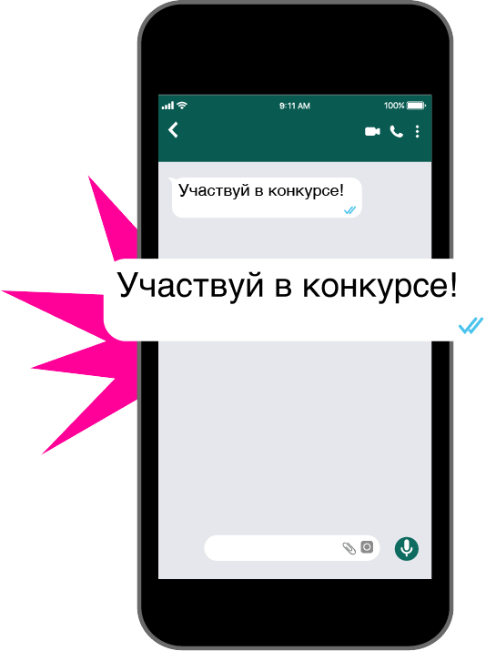
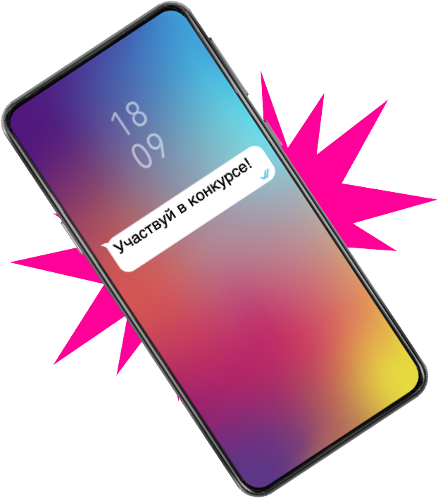

Конкурс
получи промокод на покупку нового гаджета за 1 рубль!
Связной
На связи четверть века!
Пейджеры и цифровые радиотелефоны, поездки на радиорынок и «не звони мне с городского на мобильный!». Как изменился мир сотовой связи и культура покупок в этой области, вспоминаем вместе с компанией «Связной», отмечающей в этом году 25-летний юбилей.
Таймлайн
Даёшь пятилетку досрочно, - это на самом деле не про советское народное хозяйство, а про технику и технологии, которые развивались в последние десятилетия космическими темпами. Пять самых ярких, технологичных и революционных пятилеток в области сотовой связи, - в интерактивном таймлайне, подготовленном совместно с компанией «Связной».
1995-2000
1995 год
Недолгая слава пейджеров
Мобильная связь во второй половине 90-х существовала в двух форматах: в виде мобильников-кирпичей весом до полукилограмма и в форме небольших поясных устройств — пейджеров. С практической точки зрения последние были особенно бестолковы: доставка сообщения зависела от множества факторов, и гарантий, что вас в итоге прочитают, никто не давал. Тем не менее пейджеры были признаком финансовой состоятельности и пищей для ума тогдашних музыкантов. Песенка Жуков про «Скинь мене на пейджер, мол, так и так» звучала в те годы из каждого утюга.
1995 год
Основана компания «Максус»
Основана компания «Максус», основным видом деятельности которой являются оптовые поставки телефонов и персональной аудиотехники в Москве. Местом основной дислокации «Максуса» становится «Горбушка». Именно сюда со всей Москвы едут любители телефонных новинок — главным образом цифровых радиотелефонов стандарта DECT. Именно ради них компания подписывает дистрибьюторское соглашение с Siemens, и так удачно, что завоевывает половину российского рынка этих моделей.

2000-2005
2002 год
Первые
мобильные
мобильные
В 2002 году мобильные телефоны впервые становятся популярнее стационарных, благодаря «Связному», на российский рынок приходят ключевые бренды сотовой связи, однако активное пользование мобильной связью все еще остается привилегией обеспеченных людей. При средней зарплате в России 80 долларов за одно только подключение к мобильному номеру приходится выкладывать от 50 долларов. Средняя минута разговора стоит 15 центов. Верх бессознательности — позвонить на мобильный с городского телефона и обнулить счет владельца сотового телефона: плату за входящие вызовы законодательно отменят только в 2006 году.
2002 год
Первые прямые контракты
Компания «Связной» подписывает первые прямые контракты с ведущими производителями персональной аудиотехники и средств связи, такими как Siemens, Motorola, Philips и Ericsson. Летом 2002 года открывается интернет-магазин «Связной», который становится одним из первых интернет-магазинов в мобильном ретейле России.

2005-2010
2005 год
Мобильный интернет
К концу этой пятилетки в России происходят два ключевых события. Окончательно отключается оборудование советской марки «Алтай», десятилетиями отвечавшее за советскую «мобильную связь» — стационарную телефонию в автомобилях чиновников и силовиков. И почти одновременно с этим происходит запуск телефонии третьего поколения — 3G, благодаря которой жители России знакомятся (пока еще робко) с мобильным интернетом. Одним из первых телефонов с поддержкой новых технологий становится выпущенный в 2005 году Sony Ericsson W900i из серии Walkman: отправиться за его покупкой в «Связной» было самым настоящим событием.
2007 год
Экспансия
Связного
Связного
«Связной» завершает экспансию в регионы, открывая новые салоны сотовой связи по всей России, от Калининграда до Владивостока. Также «Связной» выходит на иностранный рынок, запуская свои первые магазины в Республике Беларусь.

2010-2015
2011 год
Эра смартфонов
В 2011 году в Новосибирске запускают первую в России LTE-сеть, благодаря которой мобильный интернет сильно дешевеет и ускоряется. А в 2012-м на полках российских магазинов появляются первые флагманы с поддержкой новой технологии. Классическими мобильниками теперь в шутку предлагают «орехи колоть»: население массово переходит на смартфоны, устанавливая на них всевозможные приложения. Одно из главных открытий этой пятилетки —WhatsApp, позволяющий обмениваться сообщениями бесплатно. Растет популярность устройств Apple: теперь их можно обнаружить не только на полках фирменных магазинов марки, но и в «Связном».
2012 год
Прямой договор
с Apple
с Apple
«Связной» заключил прямой договор поставки с Apple, став единственным независимым ретейлером, имеющим подобный контракт. Подогревая интерес пользователей к мобильным приложениям, компания выпускает мобильное приложение «Связной тревел» и запускает первый в России квест в Telegram.

2015-2020
2015 год
Эпоха
мобильного интернета
мобильного интернета
Россия первой в мире начинает официальную продажу смартфонов Xiaomi, которые к тому моменту уже сумели завоевать сердца миллионов жителей планеты. Население страны делится на iOS и Android: для одних по-прежнему важно обзаводиться последними моделями Apple, а другие довольствуются доступным китайским вариантом. Но все активно пользуются мобильным интернетом — настолько, что для многих смартфон уже становится альтернативой рабочему ноутбуку или компьютеру. Все ждут наступление эры 5G. По прогнозам, осталось каких-то пару лет.
2020 год
Точка встречи клиентов и технологий
«Связной» первым в нашей стране начинает продажи смартфонов Xiaomi, создает первый в России рекламный ролик Apple и развивает монобрендовую сеть Сstore: магазины, в которых представлена вся техника Apple, доступная в нашей стране, открываются в 22 городах. «Связной» первый среди ретейлеров начинает продажи автомобилей Tesla, а еще через год становится первой сетью в России, где появляются «Яндекс.Станция», а также устройства «умный дом» от «Яндекса» — умная лампочка, умная розетка, умный пульт. В том же году «Связной» запускает новый формат магазинов с техникой для умного дома «Связной Plus». В 2020 году «Связной» для всех своих покупателей запускает доставку товаров из своего интернет-магазина svyaznoy.ru с помощью курьеров Delivery Club и водителей «Ситимобил» за время, которое не отличается от обычного времени доставки блюд из ресторанов.
2020 (с) HSMedia
20
20 лучших историй получат приз
от компании «Связной»
- промокоды на покупку товара в Связном
за 1 рубль.
от компании «Связной»
- промокоды на покупку товара в Связном
за 1 рубль.
Конкурс
Расскажи о первом телефоне и получи
беспроводную зарядку за 1 рубль!
беспроводную зарядку за 1 рубль!
авторизуйтесь через соц. сети
или пройдите регистрацию
20
20 лучших историй получат приз
от компании «Связной»
- промокоды на покупку товара в Связном
за 1 рубль.
от компании «Связной»
- промокоды на покупку товара в Связном
за 1 рубль.